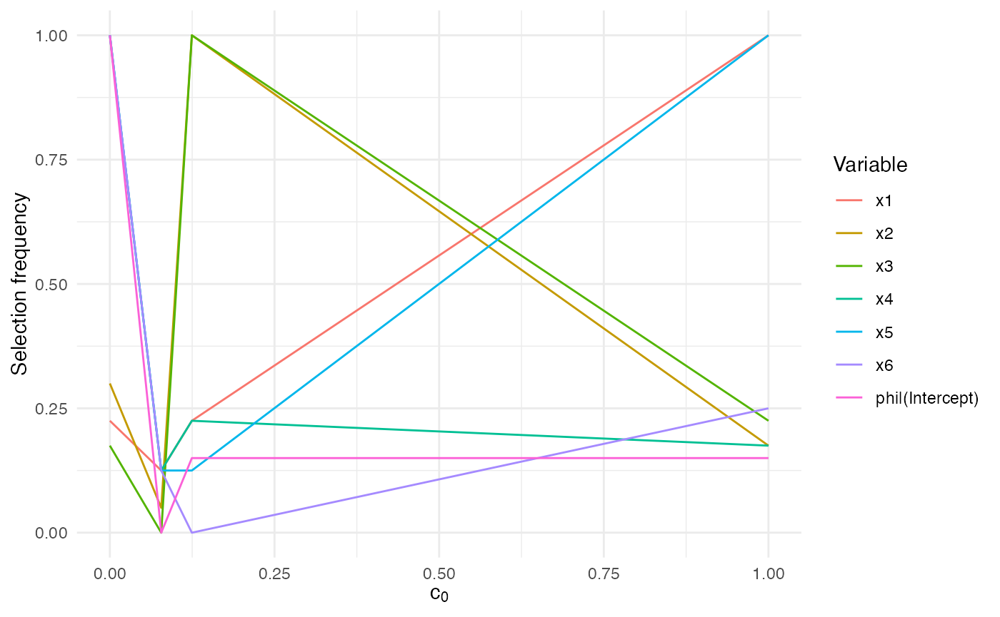

Getting started with SelectBoost.beta
SelectBoost.beta authors
Cedric, Cnam, Parisfrederic.bertrand@lecnam.net
2025-11-04
Source:vignettes/selectboost-cran.Rmd
selectboost-cran.RmdIntroduction
This vignette provides a CRAN-friendly tour of the SelectBoost.beta
workflow. It simulates a reproducible beta-regression data set, runs the
high-level sb_beta() driver, and shows how to interpret the
stability matrix returned by the algorithm. All code is self-contained
and executes quickly under the default knitr settings.
Simulated data
We use the built-in simulation_DATA.beta() helper to
generate a correlated design with three truly associated predictors. The
response lives in (0, 1) and is already compatible with the
beta-regression selectors.
sim <- simulation_DATA.beta(n = 120, p = 6, s = 3, rho = 0.35,
beta_size = c(1.1, -0.9, 0.7))
str(sim$X)
#> num [1:120, 1:6] 0.982 0.469 -0.108 -0.213 1.158 ...
#> - attr(*, "dimnames")=List of 2
#> ..$ : NULL
#> ..$ : chr [1:6] "x1" "x2" "x3" "x4" ...
summary(sim$Y)
#> Min. 1st Qu. Median Mean 3rd Qu. Max.
#> 6.685e-05 1.907e-01 5.068e-01 4.763e-01 7.551e-01 9.862e-01Running sb_beta()
The sb_beta() wrapper orchestrates the full SelectBoost
loop: it normalises the design matrix, groups correlated predictors,
regenerates surrogate designs, and records selection frequencies for
each threshold.
sb <- sb_beta(sim$X, sim$Y, B = 40, step.num = 0.4, seed = 99)
sb
#> SelectBoost beta selection frequencies
#> Selector: betareg_step_aic
#> Resamples per threshold: 40
#> Interval mode: none
#> c0 grid: 1.000, 0.124, 0.078, 0.000
#> Inner thresholds: 0.124, 0.078
#> x1 x2 x3 x4 x5 x6 phi|(Intercept)
#> c0 = 1.000 1.000 1.000 1.000 0.000 0.000 0.000 1
#> c0 = 0.124 0.175 0.250 1.000 0.150 0.125 0.225 1
#> c0 = 0.078 0.225 0.150 0.225 0.125 0.125 0.300 1
#> c0 = 0.000 0.175 0.225 0.125 0.050 0.125 0.175 1
#> attr(,"c0.seq")
#> [1] 1.0000000 0.1244760 0.0780104 0.0000000
#> attr(,"steps.seq")
#> [1] 0.1244760 0.0780104
#> attr(,"B")
#> [1] 40
#> attr(,"selector")
#> [1] "betareg_step_aic"
#> attr(,"resample_diagnostics")
#> attr(,"resample_diagnostics")$`c0 = 1.000`
#> [1] group size regenerated
#> [4] cached mean_abs_corr_orig mean_abs_corr_surrogate
#> [7] mean_abs_corr_cross
#> <0 rows> (or 0-length row.names)
#>
#> attr(,"resample_diagnostics")$`c0 = 0.124`
#> group size regenerated cached mean_abs_corr_orig mean_abs_corr_surrogate
#> 1 x1,x4,x5 3 40 FALSE 0.1127816 0.1356965
#> 2 x2,x6 2 40 FALSE 0.1244760 0.1294831
#> 3 x1,x4,x6 3 40 FALSE 0.1396964 0.1407319
#> 4 x1,x5 2 40 FALSE 0.1401757 0.1481810
#> 5 x2,x4,x6 3 40 FALSE 0.1374098 0.1355264
#> mean_abs_corr_cross
#> 1 0.06758135
#> 2 0.07596385
#> 3 0.07866263
#> 4 0.06583547
#> 5 0.08691954
#>
#> attr(,"resample_diagnostics")$`c0 = 0.078`
#> group size regenerated cached mean_abs_corr_orig
#> 1 x1,x3,x4,x5,x6 5 40 FALSE 0.09727572
#> 2 x2,x3,x4,x6 4 40 FALSE 0.10188328
#> 3 x1,x2,x3,x5,x6 5 40 FALSE 0.08631999
#> 4 x1,x2,x4,x6 4 40 FALSE 0.11819411
#> 5 x1,x3,x5 3 40 FALSE 0.10711418
#> 6 x1,x2,x3,x4,x6 5 40 FALSE 0.10113912
#> mean_abs_corr_surrogate mean_abs_corr_cross
#> 1 0.1123564 0.07043535
#> 2 0.1156346 0.07450001
#> 3 0.1108955 0.07185240
#> 4 0.1303823 0.07356340
#> 5 0.1054951 0.06943202
#> 6 0.1183650 0.07719288
#>
#> attr(,"resample_diagnostics")$`c0 = 0.000`
#> group size regenerated cached mean_abs_corr_orig
#> 1 x1,x2,x3,x4,x5,x6 6 40 FALSE 0.09172931
#> mean_abs_corr_surrogate mean_abs_corr_cross
#> 1 0.1091279 0.0750416
#>
#> attr(,"interval")
#> [1] "none"The returned matrix has one row per correlation threshold. Attributes attached to the matrix document how the fit was produced:
attr(sb, "c0.seq")
#> [1] 1.0000000 0.1244760 0.0780104 0.0000000
attr(sb, "B")
#> [1] 40
attr(sb, "interval")
#> [1] "none"Use summary() to obtain per-threshold summaries and
autoplot.sb_beta() (when ggplot2 is available)
to visualise the stability matrix.
summary(sb)
#> SelectBoost beta summary
#> Selector: betareg_step_aic
#> Resamples per threshold: 40
#> Interval mode: none
#> c0 grid: 1.000, 0.124, 0.078, 0.000
#> Inner thresholds: 0.124, 0.078
#> Top rows:
#> c0 variable frequency
#> 1 1.000 x1 1.000
#> 2 1.000 x2 0.175
#> 3 1.000 x3 0.225
#> 4 1.000 x4 0.175
#> 5 1.000 x5 1.000
#> 6 1.000 x6 0.250
#> 7 1.000 phi|(Intercept) 0.150
#> 8 0.124 x1 0.225
#> 9 0.124 x2 1.000
#> 10 0.124 x3 1.000
if (requireNamespace("ggplot2", quietly = TRUE)) {
autoplot.sb_beta(sb)
}
The frequency values range between 0 and 1 and report how often each
predictor received a non-zero coefficient across the correlated
replicates. High values signal stable selections. If your data contain
zeros or ones, keep squeeze = TRUE (the default) so the
algorithm applies the standard SelectBoost transformation before fitting
the selectors.
Comparing selectors
When you wish to benchmark multiple selector families, the
compare_selectors_single() helper runs them once on the
same data set and returns both raw coefficients and a tidy summary
table. Column names are briefly shortened internally to satisfy each
selector and then mapped back in the outputs.
single <- compare_selectors_single(sim$X, sim$Y, include_enet = FALSE)
head(single$table)
#> selector variable coef selected
#> x1 AIC x1 1.0590158 TRUE
#> x2 AIC x2 -0.8855152 TRUE
#> x3 AIC x3 0.7277844 TRUE
#> x4 AIC x4 0.0000000 FALSE
#> x5 AIC x5 0.0000000 FALSE
#> x6 AIC x6 0.0000000 FALSEBootstrap tallies add a stability perspective. The freq
column in the table below measures the proportion of resamples where the
variable was selected; values close to 1 indicate consistent
discoveries.
freq <- suppressWarnings(compare_selectors_bootstrap(sim$X, sim$Y, B = 100,
include_enet = FALSE, seed = 99))
head(freq)
#> selector variable freq n_success n_fail
#> x1 AIC x1 1.00 100 0
#> x2 AIC x2 1.00 100 0
#> x3 AIC x3 1.00 100 0
#> x4 AIC x4 0.22 100 0
#> x5 AIC x5 0.17 100 0
#> x6 AIC x6 0.32 100 0Merge both views with compare_table() and use
plot_compare_coeff() or plot_compare_freq()
for quick diagnostics.
compare_table(single$table, freq)
#> selector variable coef selected freq n_success n_fail
#> 1 AIC x1 1.059016e+00 TRUE 1.00 100 0
#> 2 AIC x2 -8.855152e-01 TRUE 1.00 100 0
#> 3 AIC x3 7.277844e-01 TRUE 1.00 100 0
#> 4 AIC x4 0.000000e+00 FALSE 0.22 100 0
#> 5 AIC x5 0.000000e+00 FALSE 0.17 100 0
#> 6 AIC x6 0.000000e+00 FALSE 0.32 100 0
#> 7 AICc x1 1.059016e+00 TRUE 1.00 100 0
#> 8 AICc x2 -8.855152e-01 TRUE 1.00 100 0
#> 9 AICc x3 7.277844e-01 TRUE 1.00 100 0
#> 10 AICc x4 0.000000e+00 FALSE 0.16 100 0
#> 11 AICc x5 0.000000e+00 FALSE 0.13 100 0
#> 12 AICc x6 0.000000e+00 FALSE 0.37 100 0
#> 13 BIC x1 1.059016e+00 TRUE 1.00 100 0
#> 14 BIC x2 -8.855152e-01 TRUE 1.00 100 0
#> 15 BIC x3 7.277844e-01 TRUE 1.00 100 0
#> 16 BIC x4 0.000000e+00 FALSE 0.02 100 0
#> 17 BIC x5 0.000000e+00 FALSE 0.03 100 0
#> 18 BIC x6 0.000000e+00 FALSE 0.13 100 0
#> 19 GLMNET x1 9.901824e-01 TRUE 1.00 100 0
#> 20 GLMNET x2 -8.043564e-01 TRUE 1.00 100 0
#> 21 GLMNET x3 6.703246e-01 TRUE 1.00 100 0
#> 22 GLMNET x4 0.000000e+00 FALSE 0.30 100 0
#> 23 GLMNET x5 0.000000e+00 FALSE 0.41 100 0
#> 24 GLMNET x6 0.000000e+00 FALSE 0.49 100 0
#> 25 LASSO x1 1.088734e+00 TRUE 1.00 100 0
#> 26 LASSO x2 -8.211508e-01 TRUE 1.00 100 0
#> 27 LASSO x3 7.489369e-01 TRUE 1.00 100 0
#> 28 LASSO x4 5.275007e-11 TRUE 1.00 100 0
#> 29 LASSO x5 -1.981396e-05 TRUE 1.00 100 0
#> 30 LASSO x6 4.151315e-02 TRUE 1.00 100 0Interval responses
If your outcome is interval-censored, run the
sb_beta_interval() convenience wrapper. It enables the
interval sampling logic inside sb_beta() while keeping the
same output format and attributes.
y_low <- pmax(sim$Y - 0.05, 0)
y_high <- pmin(sim$Y + 0.05, 1)
interval_fit <- sb_beta_interval(sim$X, y_low, y_high, B = 30,
sample = "uniform", seed = 321)
attr(interval_fit, "interval")
#> [1] "uniform"The resulting stability matrix can be summarised and visualised exactly like the point-response output shown earlier. ```